As the most prevailing two-factor authentication mechanism, smart-card-based password authentication has been a subject of intensive research in the past two decades, and hundreds of this type of schemes have wave upon wave been proposed. In most of these studies, there is no comprehensive and systematical metric available for schemes to be assessed objectively, and the authors present new schemes with assertions of the superior aspects over previous ones, while overlooking dimensions on which their schemes fare poorly. Unsurprisingly, most of them are far from satisfactory—either are found short of important security goals or lack of critical properties, especially being stuck with the security-usability tension. To overcome this issue, in this work we first explicitly define a security model that can accurately capture the practical capabilities of an adversary and then suggest a broad set of twelve properties framed as a systematic methodology for comparative evaluation, allowing schemes to be rated across a common spectrum. As our main contribution, a new scheme is advanced to resolve the various issues arising from user corruption and server compromise, and it is formally proved secure under the harshest adversary model so far. In particular, by integrating “honeywords”, traditionally the purview of system security, with a “fuzzy-verifier”, our scheme hits “two birds”: it not only eliminates the long-standing security-usability conflict that is considered intractable in the literature, but also achieves security guarantees beyond the conventional optimal security bound.
Introduction
传统的仅密码机制的一个固有限制是，服务器必须存储一个敏感的验证者表，其中包含所有注册用户的密码（或加盐哈希中的密码）。一旦认证服务器被攻破，所有用户的密码都将被暴露
由于人类固有的有限内存和安全预算，用户选择的密码的分布高度倾斜
更糟糕的是，用户倾向于使用相同的密码（或轻微的变化）来访问多台服务器，一台服务器的泄露将导致失败所有其他服务器，这被描述为密码重用的“多米诺骨牌效应”。
Related works
为了解决受感染服务器的密码泄漏问题，最近提出了threshold password-only authentication scheme1。在这种方案中，密码文件和用户数据分布在多个服务器上，因此达到一定阈值的服务器联盟都无法了解有关密码的任何信息。然而，它们本质上无法应对用户端出现的另一个新出现的密码泄露问题（例如隐藏摄像头、键盘记录器和网络钓鱼）。
为了防止用户侧密码泄露，人们提出了leakage-resilient password systems (LRPS)2。在此类方案中，用户需要间接输入密码，这给普通用户带来了额外的负担。最近，有研究表明3，为了获得合理的安全性和可接受的可用性，LRPS方案必须采用某些可信设备来很好地解决用户侧密码泄漏的安全威胁。
阈值和 LRPS 方案的局限性巩固了第三种方法——引入智能卡作为“第二道防线”。这就产生了基于智能卡的密码身份验证，通常称为“双因素身份验证”。一般包含两个参与者：用户U和服务器S，四个阶段：用户注册、登录、认证、口令更新。
核心安全目标——真正双因子安全性
- 攻击者即使拥有用户智能卡且成功分析出卡内参数，仍无法通过离线字典攻击猜测出用户口令，也不能仿冒用户
- 攻击者已知用户口令，但无用户智能卡时，不能仿冒用户
除了双因素安全之外，实用的方案还应该能够抵御各种被动和主动攻击，例如被盗验证者攻击、拒绝服务攻击、反射攻击和并行会话攻击。此外，希望方案能够支持一些重要的属性，例如本地密码更改、会话密钥协商和用户匿名。
Motivation
- “break-fix-break-fix”
文献4中令人惊讶的启示说明，即仅使用现有的密码设计技术“某些目标是无法实现的”。
对双因素认证方案的系统设计和评估很少关注，没有一个共同的基础来对方案进行彻底和公平的评估。
现有的协议要么无法满足一些重要的安全目标，要么缺乏一些关键功能。关键在于如何同时实现以下两个目标：（1）真正的双因素安全，即使智能卡可能丢失和被篡改； (2) 本地且安全的密码更新。此问题尚未解决5。
在当前的二因素密码协议设计技术下，这个问题很可能是棘手的4。是否有超出已知加密方法的技术（例如，来自系统安全领域的技术）可用于防止传统加密保护失败（由于低熵密码和智能卡的条件防篡改）？
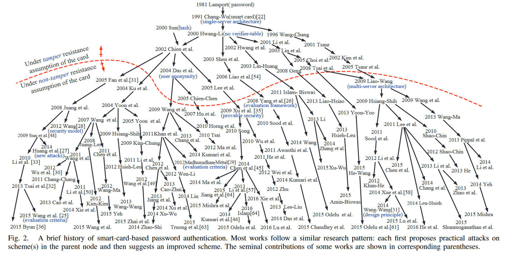
- Zipf’s law in passwords
在评估基于密码的方案的安全保证时，总是假设用户的密码在口令空间中均匀分布。由于这种假设与现实相去甚远，因此可能会对方案可以提供的实际安全性产生很大的误解。
Our contributions
- 提出一个用于评估双因素身份验证方案的系统框架。它由实用的对手模型和完善的标准集组成。据我们所知，该对手模型是迄今为止最严格的模型，并且与相关工作相比，标准集更加具体和全面。通过对67个典型二因素方案的评级证明和检验了该框架的有效性和实用性。预计它将有助于更好地评估当前和未来的计划。
首次将传统上属于系统安全范围的“honeywords”6防御策略引入双因素密码协议设计中。通过将“honeywords”与我们提出的“fuzzy-verifiers”相结合，我们的方案可以及时检测用户卡损坏以阻止在线猜测，并很好地解决了文献5中留下的看似棘手的安全可用性问题——“是否存在基于智能卡的安全密码认证方案，并且密码更改阶段不需要与服务器进行任何交互”？
证明所提出的方案可以满足我们评估框架中的所有 12 个标准，并且在迄今为止最严酷的对手模型下的随机预言模型中被正式证明是安全的。特别是，我们使用大规模的现实密码来展示我们将“honeywords”与“fuzzy-verifiers”集成的有效性。我们还表明，我们的集成技术是通用的，可以很容易地应用于各种其他环境的双因素方案（除本工作中的客户端-服务器架构之外）。
Attacker model and evaluation criteria
Adversary model
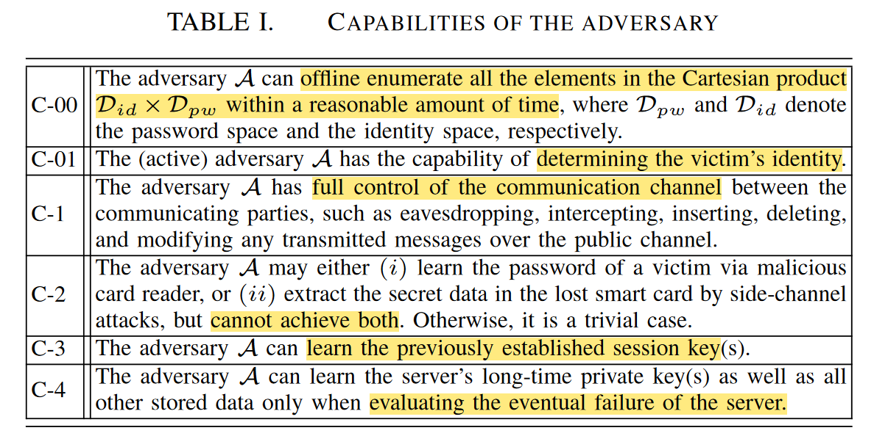
- 能在多项式时间内离线穷举笛卡儿空间$D_{id}$ $∗$ $D_{pw}$
- 主动攻击者有能力确定用户$ID$信息（考虑用户匿名性）
- 能完全控制通信信道
- 可以通过恶意读卡器获知受害者的密码，通过侧信道攻击方式提取卡中的数据，但不可能同时实现（“条件”非抗窜扰智能卡假设）
- 可以获取以前的会话密钥
- 只有在评估系统抵御潜在故障时，才能了解服务器的长期私钥
Evaluation criteria
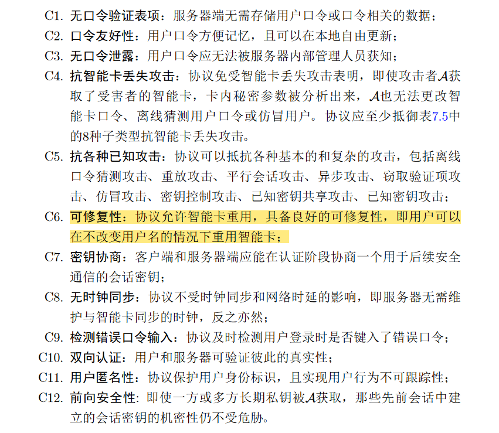
Our proposed scheme & Protocol design rationales
Registration phase
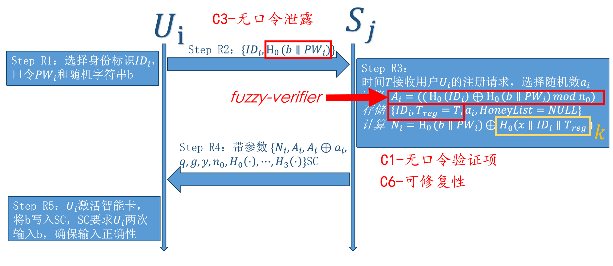
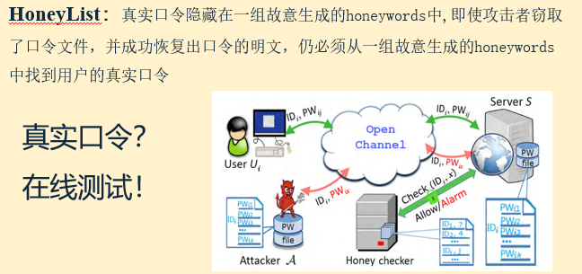
Login phase
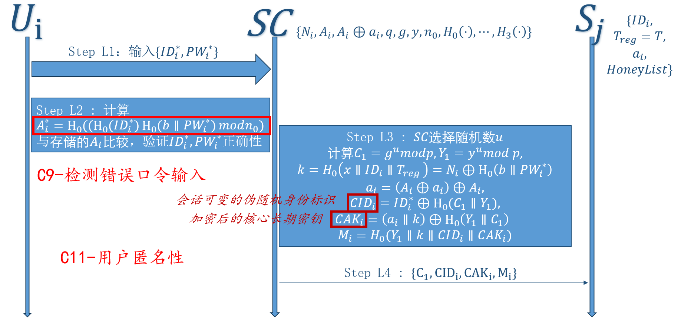
Verification phase
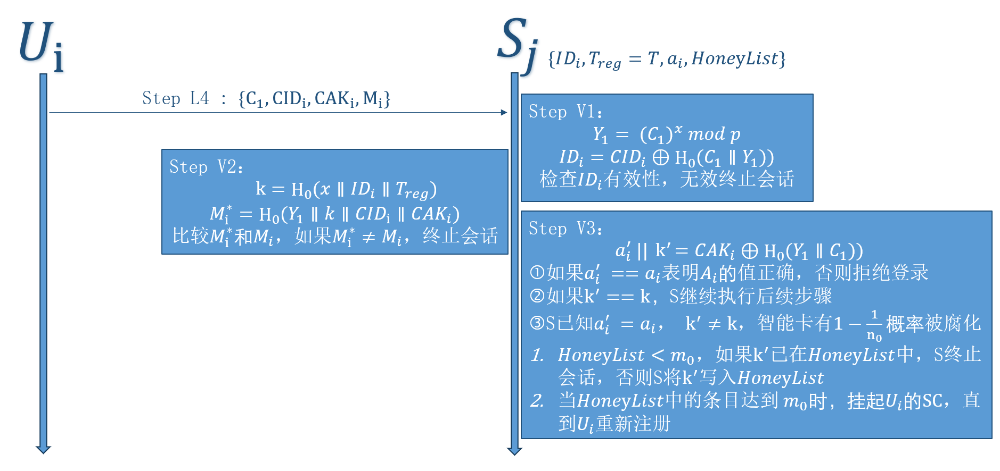
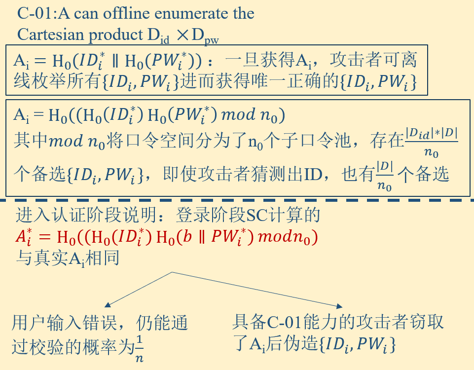
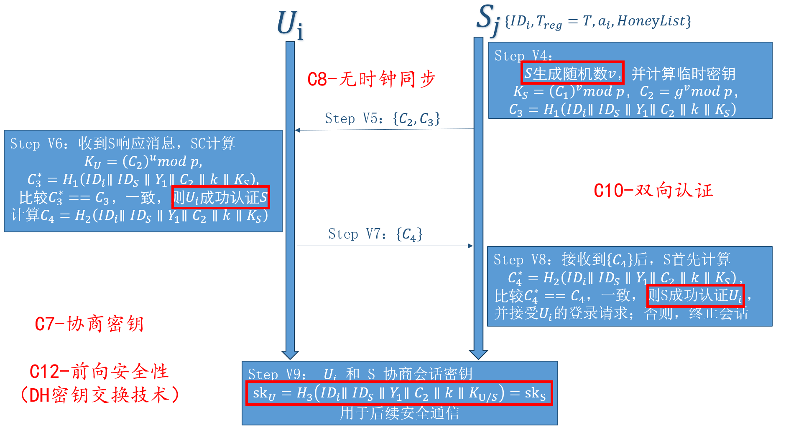
Password change phase
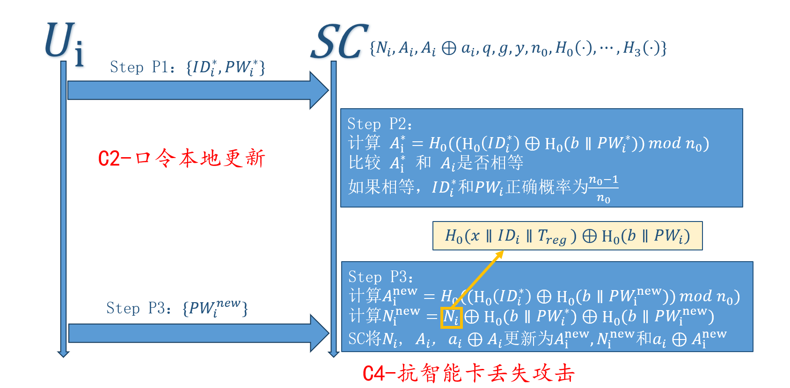
Analysis
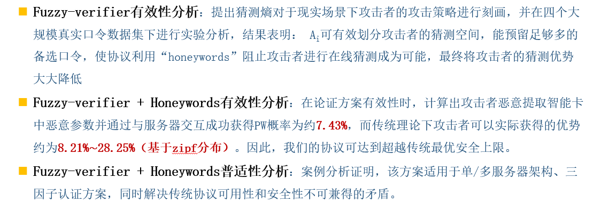
Formal security model & Formal security analysis
协议在ROM模型下，基于CDH难解性假设，可实现可证明安全。具体可参考文献7P129页。
Advantages & disadvantages
优点
- 提出新的攻击者模型和12项安全指标，朝打破双因素身份验证研究领域的“break-fix-break-fix”循环迈出了第一步
- 提出新的双因素认证方案，在最严厉的对手模型下证明它是安全的
- 将传统系统安全范围的”honeywords“与“fuzzy-verifier”结合，消除了长期存在的安全性和可用性冲突，超越传统最佳安全界限
缺点/不足
- $Verification$ $phase$ $Step$ $V2$中${M_i}$校验时会顺带检测$k$，使攻击者的在线猜测在“honeyList”发挥作用前就已终止，有打草惊蛇之嫌
- 协议中超越的传统安全界限是口令基于Zipf分布下攻击者获得的优势，和$Q_{send}/|{D}|+ε$有区别，文中写法建议修改
- 后续工作可以将其扩展到三因子认证协议、单/多服务器架构，已经论述其可行性
研究口令的Zipf分布也是一项有意义的工作
所学有限，关于协议本身漏洞或是一些深层次思考尚无思绪，后续知识足够再回来重新审视该协议
参考文献
1:J. Camenisch, A. Lehmann, and G. Neven, “Optimal distributed password verification,” in Proc. ACM CCS 2015, pp. 182–194.
2:D. Weinshall, “Cognitive authentication schemes safe against spyware,” in Proc. IEEE S&P 2006. IEEE, 2006, pp. 295–230.
3:Q. Yan, J. Han, Y. Li, and R. H. Deng, “On limitations of designing leakage-resilient password systems: Attacks, principles and usability,” in Proc. NDSS 2012. The Internet Society, 2012, pp. 1–16.
4:D. Wang, D. He, P. Wang, and C.-H. Chu, “Anonymous twofactor authentication in distributed systems: Certain goals are beyond attainment,” IEEE Trans. Depend. Secur. Comput., vol. 12, no. 4, pp. 428–442, 2015.
5:X. Huang, X. Chen, J. Li, and L. Xiang, Yang ang Xu, “Further observations on smart-card-based password-authenticated key agreement in distributed systems,” IEEE Trans. Para. Distrib. Syst., vol. 25, no. 7, pp. 1767–1775, 2014.
6:A. Juels and R. L. Rivest, “Honeywords: Making password-cracking detectable,” in Proc. ACM CCS 2013, pp. 145–160.
7:口令安全关键问题研究_汪定 北京大学